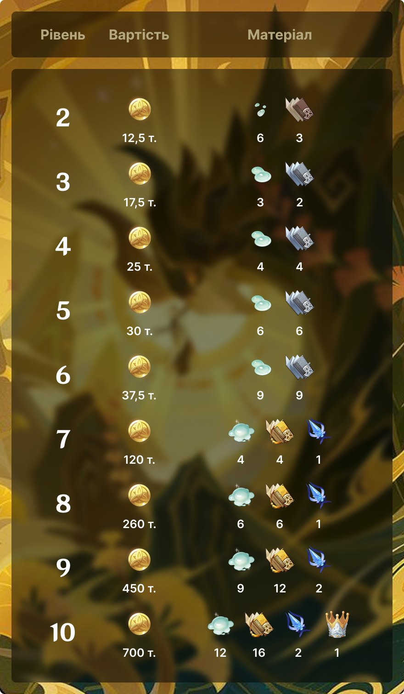

Джонлі
Гео архонт та бог контрактів
Таємничий консультант похоронного бюро Ваншен. Мужній, елегантний і надзвичайно ерудований. Хоча ніхто не знає, звідки Джонлі, проте він майстер у ввічливій поведінці та знанні правил. Разом із господинею похоронного бюро Ваншен він виконує всілякі ритуали.
історія
Людське ім’я: Джонлі
Божествене ім’я: Моракс
Бог: Контрактів
Стихія: Гео
Регіон: Лі Юе
Рідкість: 5 зірок
Зброя: Спис
День народження: 16 червня
Історія 1
Якщо людина має жорсткі стандарти, то в Лі Юе її називають педантом. Насправді, кожна людина тією чи іншою мірою педантична. Хтось відмахуватиметься від гострих страв, навіть не скуштувавши їх, або від риби, або буде скаржитися, що його тофу не вистачає м'якості та солодкого післясмаку... Що стосується Джон Лі, то він педантичний у всьому. Він насолоджуватиметься виступом лише найзнаменитіших артистів, виводитиме на прогулянку лише найрозкішнішого птаха і навіть заходитиме на кухню до шеф-кухаря, щоб пояснити йому пропорції риби до креветок для приготування ідеальної повномісячної яєчні. Джон Лі розуміє абсолютно все: від побуту до політики, але в повсякденній розмові з вами він буде говорити тільки на самі марні теми. Більше він не має наміру ділитися ні з ким.
Історія 2
Не можна купувати речі, не поторгувавшись. Цю звичку поділяють усі жителі Лі Юе, і вони знають, що якою б високою не була ціна, найкраще розпочати торги з її половини. Однак Джон Лі ніколи не дивиться на цінники. Якщо йому сподобалася дрібниця, він заплатить за неї стільки, скільки скаже продавець, іноді навіть не буде проти переплатити. Але з невідомої причини Джон Лі постійно забуває свій гаманець удома. З дрібними покупками йому допомагають його друзі, а з великими він завжди знаходить виправдання, щоби відкласти оплату. Багато улесливих торговців, яких збагатив Джон Лі, сходяться на думці, що він має рідкісну якість: Джон Лі знає ціну грошам, але також і розуміє, наскільки тяжко вони дістаються. Однак він не розуміє, як слово «бідність» може відноситися до нього. Іншими словами, Джон Лі не може уявити себе без грошей. Він не розуміє, як такі люди ще не вмерли з голоду.
Історія 3
Однак Джон Лі не може померти з голоду. Йому не треба хвилюватися про гроші, адже його серце та розум лежать у семи королівствах. Що стосується фінансів... Джон Лі і є їхнє втілення, адже він - Володар Каміння, Гео Архонт, правлячий Лі Юе, він же Моракс, на честь якого була названа валюта «мора». З настанням ночі киплячий життям Лі Юе засинає, і іноді Архонт піднімається на вершину гори і дивиться на місто, яке створив власними руками. Жителі Лі Юе називають Володаря Каміння багатьма іменами. Коли він написав зведення законів Лі Юе, люди охрестили його богом угод та контрактів. Коли він викарбував першу монету мори, яка стала фундаментальною ланкою світової економіки, торговці прозвали його богом комерції. Будучи найдавнішим із семи архонтів, Джон Лі став свідком багатотисячолітньої історії світу, тому вчені-історики проголосили його богом історії. Тисячі років тому, коли перші поселенці Лі Юе вперше розпалили вогонь у своїх кам'яних печах і приготували собі їжу, вони почали називати його богом вогнища. Чужоземці називають його Моракс, але жителям Лі Юе більше подобається називати його Володарем Каміння. Крім того, дітям та оперним сценаристам особливо подобається його образ войовничого божества, котрий покарав злих Архонтів на полях стародавніх битв. Вулична їжа, яку придумав Володар Каміння, заблукавши в лісах; кам'яні таблички з написами Володаря Каміння; знаменита оперета, в якій Володар Каміння сам взяв участь... З упевненістю можна сказати, що багато звичаїв та традицій Лі Юе виникли завдяки впливу Гео Архонта на життя людей. Жителі Лі Юе неймовірно пишаються тим, що їхній Архонт живе серед них.
Історія 4
Як засновник гавані Лі Юе, Моракс найбільше цінує в цій торговій столиці «договори». У Лі Юе їх безліч: від простих торгових угод до стародавнього склепіння законів, які склав він сам під час заснування Лі Юе. Усі «договори» служать різним цілям. Для торговців договори є гарантією чесної та надійної угоди та прив'язують її до дат відвантаження, оплати, місць передачі товару тощо. Це сприяє здоровій комерції, яка є кровоносною системою Лі Юе. Угруповання Цісін жорстко карає порушників цих договорів не тільки щоб дотримуватись законів Моракса, але й для підтримки життєздатності всього міста. Протягом поколінь Цісін були тими, хто тлумачив і вносив поправки до склепіння законів, намагаючись закрити всі знайдені в них лазівки. Ті ж лазівки, які вони не могли перекрити, вважалися «дозволеними ходами» доти, доки відповідну поправку не буде прийнято. На сьогоднішній день в останньому виданні склепіння законів налічується 279 сторінок. Волю Небес Цісін, Нін Гуан, обрану нині для тлумачення та зміни правил, за свою ефективність та точність називають «кравцем Лі Юе». Однак якими б складними і заплутаними були ці закони, один закон для Володаря Камня стоїть вище за інших: «На того, хто порушить договір, обрушиться гнів Каміння».
Історія 5
Моракс - старший із семи Архонтів. Він був свідком тих часів, коли Війна Архонтів нарешті була закінчена, і семеро Архонтів, що залишилися, зайняли свої трони, поклавши кінець епосі богів. Хоча їхні погляди і розходилися, і жили вони далеко один від одного, але їм було доручено одне - спрямовувати людей. Час минав, одні архонти змінювалися іншими. Лише два Архонти залишилися з тих часів і до наших днів: Володар Каміння та Анемо Архонт свободи та вітру. Анемо Архонт, Барбатос, був другим за старшинством. Дві тисячі років тому він прибув у Лі Юе, щоб відвідати Гео Архонта, і той був готовий надати будь-яку послугу Анемо Архонту, але Барбатос просто простяг йому пляшку і сказав: «Це вино зробили в Мондштадті. Пригощайся, будь ласка». Моракс не міг повірити, що Архонт може просто залишити свої обов'язки заради того, щоб пригостити вином свого товариша. Однак це був далеко не останній візит Барбатоса до Лі Юе. Він хотів знати все про місто та його мешканців, його цікавість струмувала, наче вино з пляшки. У ті часи семеро архонтів проводили зустрічі в Лі Юе, і Моракс досі пам'ятає смак того вина, яке вони пили під час цих зборів. Світ продовжував змінюватися, Архонти вмирали та відроджувалися. З сімох присутніх на зборах Архонтів залишилося лише двоє. Нові молоді архонти почали забувати про свій обов'язок. Трьох тисяч років було достатньо, щоб сточити найміцніші камені. Навіть Барбатос не відвідував Лі Юе протягом багатьох сотень років. Моракс, який одного разу прогулювався набережною, почув, як торговець хвалить свого працівника: «Ти виконав свою роботу. Тепер можеш відпочити». Стоячи посеред жвавої вулиці, Моракс поринув у свої думки: «А чи виконав я свою роботу?..»
Історія 6
Після того, як спектакль «Церемонія Вознесіння» був майстерно поставлений і зіграний Джон Лі, який виконав у ньому головну роль, Синьйора, одна з Провісників Фатуї, особисто з'явилася до нього. Згідно із заздалегідь підписаним договором, вона прийшла за Серцем Бога Гео Архонта Моракса. Стоячи віч-на-віч перед мандрівником(цей) і двома Провісниками Фатуї, Джон Лі чесно розповів про угоду з Кріо Архонтом. За його словами, це його останній договір, «контракт, який завершує всі контракти». Але, хоч би хто не казав, втрата божественних сил - надто висока ціна навіть за те, щоб захистити Лі Юе. Серед простих смертних є непорушне правило «рівноцінного обміну». Бог контрактів за довгі тисячоліття свого існування підписав безліч контрактів, тому таку важливу угоду просто має обіцяти йому деякі вигоди. Отже Гео Архонт віддав своє Серце Бога за контрактом. То що такого могла запропонувати йому Кріо Архонт, щоб зрівняти чаші терезів?
геймплей
Чжун Лі – універсальний персонаж, чиї скіли здатні забезпечити команду і додатковою шкодою, і гарною підтримкою. Елементальна навичка Архонта викликає Гео конструкцію, яка завдає періодичної шкоди навколо себе і дає один з найміцніших щитів у грі. Вибух стихій Чжун Лі не тільки атакує Гео втратою по супротивникам, а й накладає на них Скам'янення, що заважає пересуватися.

Звичайна атака
Заряджена атака
Атака в падіні

Елементальна навичка(швидкий натиск)
Елементальна навичка(довгий натиск)

Вибух стихій
Анімація очікування
Анімація очікування
піднесення
Для піднесення Джонлі вам необхідно зібрати камінь Бурштину(ябо як його ще називають Кор Ляпіс), котрий можна знайти на горі Хулао, або біля скел Лі Юе. Також вам знадобиться слиз слайма який випадає з елементальних слаймів. Знайти їх не є проблемою, адже вони знаходяться всюди у всіх регіонах. Обов’язковою складовою піднесення є базальтова колона. ЇЇ ви можете отримати, при перемозі над босом — Гео гіпостазисом. Звідти ж є шанс випасти камню топазу Прітхва, котри також є необхідним для піднесення Джонлі.

таланти

Кам’яний дощ
Ядро землі
Небесна зірка
Судження імператора
Карбування золота
Кришталева доля
Для покращення талантів вам знадобиться книги про “Золото”, які можна добути у маєтку Тайшань в СР/СБ/НД. Починаючи з 7 рівня вам необхідно зібрати Ріг Небесного Нарвала. Його можна отримати після перемоги над щотижневим босом «Юнним майстром», який знаходиться в Лі Юе у Золотій палаті. Щоб підвищити талант до найвищого 10 рівня вам необхідно мати Корону Прозріння. ЇЇ можна отримати під час івентів або із завдань деяких ігрових режимів.
сузір'я
Камінь, скелет землі
Камінь, колиска нефриту
Нефрит, що мерехтить у темряві
Топаз, твердий і незламний
Лазурит, захисник небесних порядків
Золото, дари світові

картки
«Священний заклик сімох» – постійний ігровий режим, доданий у версії 3.3. Він є покроковою колекційною картковою грою на двох, заснованою на механіках Genshin Impact. Мета гри - зібрати власну карткову колоду і перемогти в поєдинку, здолавши всіх персонажів супротивника. Гравці можуть запрошувати зіграти партію деяких ігрових та неігрових персонажів, а також грати проти інших мандрівників, проте нагород за PvP-дуелі не передбачено. Гравці можуть розблокувати навчальне завдання Приходьте зіграти у Священний заклик сімох після досягнення Рангу пригод 32 та завершення завдання Архонтів Пролог. Глава III: Пісня про драконову свободу.
Кам’яний дощ
Звичайна атака
Завдає 2 од. Фізичного шкоди.

Ядро землі
Елементальна навичка
Завдає 1 од. Гео шкоди, викликає Кам’яну Стелу.
Кам’яна Стела
Наприкінці раунду завдає 1 од. Гео шкоди.
Зарядів: 2
Ядро землі: Ударний камінь
Елементальна навичка
Завдає 3 од. Гео шкоди, викликає 1 Кам’яну Стелу та 1 Нефритовий Щит.
Кам’яна Стела
Наприкінці раунду завдає 1 од. Гео шкоди.
Зарядів: 2
Нефритовий Щит
Надає активному персонажу 2 од. Щита.
Небесна зірка
Вибух Стихій
Завдає 4 од. Гео шкоди, наносить статус Скам’яніння на обраного персонажа супротивника.
Скам’яніння
Персонаж з цим статусом не може використовувати навички. (Триває до кінця раунду)
Бойова дія: Коли ваш активний персонаж — Джон Лі, використайте цю картку. Після того, як Джон Лі отримує цю картку, він застосовує навичку Кам’яний дощ: Ударний камінь одразу однократно. Коли ваш активний персонаж захищений або має бойовий статус із Щитом, завдається 1 од. Гео шкоди.
(Цю картку можна додати в колоду, лише якщо в ній є Джон Лі.)
Помічник
Фінальна фаза: завдає Гео шкоди, 2 од.
Створює 3 Мультиелементних дайси.
(Для додання цієї картки у свою колоду, вона має налічувати щонайменше 2 персонажів з Лі Юе)
Наступний раз, коли ваш персонаж завдасть Гео шкоди, можна отримати такі бонуси протягом цього раунду: Якщо на вашій стороні наявний хоч один бойовий статус, що надає щит, то такий статус наділяється 3 поділками щита.
(Для додання цієї картки у свою колоду, вона має налічувати щонайменше 2 Гео персонажів).
Створює 1 Гео дайс.
(Для додання цієї картки у свою колоду, вона має налічувати щонайменше 2 Гео персонажів).
регіон
Лі Юе
Багата гавань, що лежить на сході Тейвату. Гори стоять високі й горді поруч із кам’яним лісом, який разом із відкритими рівнинами та жвавими річками складають пишний ландшафт Лі Юе, який демонструє свою унікальну красу у кожній з чотирьох пір року. Скільки тільки дарів від гео Архонта підстерігають серед скель гір Лі Юе? Лі Юе - один із семи регіонів Тейвату. Це місто-держава, яке поклоняється Мораксу, гео Архонту.
Мапа регіону
Плейлист регіону
Для більшого погруження у атмосферу регіону ви можете послухати плейліст з пісня.